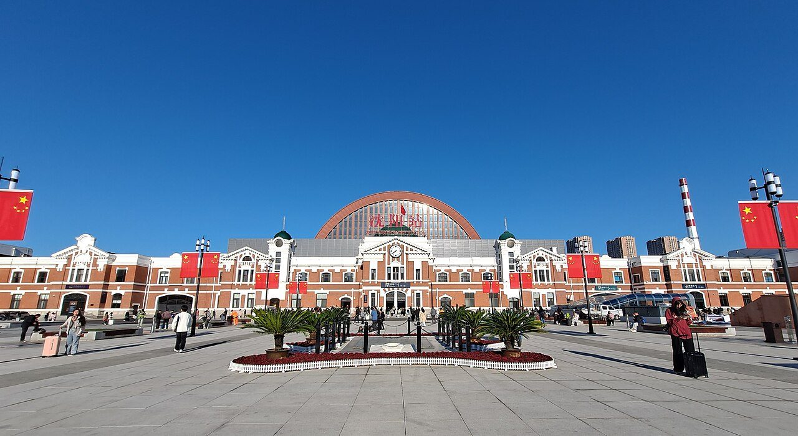
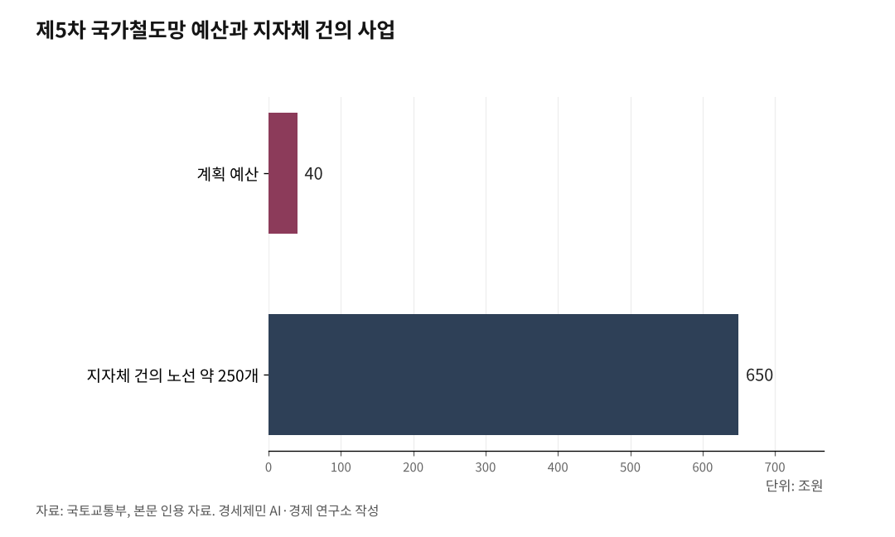

[중국철도⑦] 제5차 국가철도망이 한국 대륙철도의 분수령
2026년 7월 발표 유력, 지자체 250개 노선 650조가 40조에 몰렸다
부산·인천항이 전국 물동량 88%인데 두 항을 잇는 직결 철도가 없다
대륙철도 경로는 만주·몽골·중국횡단 셋, 북한 구간이 관문이다
AI경제저널=김갑봉 기자 | 한국 대륙 철도의 다음 분수령은 제5차 국가철도망 구축계획(2026~2035)이다. 당초 2025년 하반기 예정이었으나 윤석열 전 대통령 탄핵과 대선 정국으로 밀렸다. 김윤덕 국토교통부 장관은 2026년 7월은 돼야 발표가 가능하다고 밝혔다.

계획 예산은 40조원인데, 지자체가 낸 노선은 약 250개에 650조원어치다. 무엇을 담느냐가 대륙 철도의 그림을 가른다.
시급성도 커졌다. 홍해 위기로 한국발 유럽행 해운이 홍해를 우회하면 소요 기간이 57~63일까지 늘어난다. 대안 통로가 절실하다.
부산·인천항 88%인데 직결 철도가 없다
해양수산부 자료를 보면 2024년 부산항 컨테이너 물동량은 2440만TEU, 인천항은 356만TEU다. 전국 3173만TEU의 88.1%가 두 항에 몰린다.
그런데 부산항과 인천항을 잇는 직결 철도가 없다. 끊긴 고리는 시흥시청역 분기기, 안중역 직결, 인천신항 인입선 13.2㎞ 세 곳이다.
서해안철도도 과제다. 새만금~목포 110㎞, 사업비 4조7919억원 구간이 제5차 계획에 담기면 서해선·장항선과 이어져 인천에서 목포까지 U자형 철도망이 완성된다.
한국교통연구원은 이 철도가 열리면 군산에서 목포가 79분 단축되고 인천~목포가 최단 거리로 이어진다고 본다.
대륙철도 경로는 셋, 북한이 관문
한반도종단철도가 시베리아횡단철도와 만나는 경로는 셋이다. 만주횡단철도(TMR), 몽골횡단철도(TMGR), 중국횡단철도(TCR)다.
TMR은 다롄~선양~창춘~하얼빈~만저우리를 잇고, 선양~단둥과 하얼빈~투먼 구간이 북한 철도와 붙는다. TMGR은 톈진~베이징~지닝~울란바토르를 거쳐 시베리아철도와 만나며, 베이징~선양~단둥 구간이 북한 철도와 이어진다.
TCR은 롄윈강에서 시안·란저우·우루무치를 거쳐 국경에서 시베리아철도와 이어진다. TCR 기점 롄윈강은 한국에서 중앙아시아로 가는 가장 짧은 경로로, 1992년 시베리아철도와 연결됐다.
북중 연결점은 신의주~단둥, 만포~지안, 남양~투먼 세 곳, 북러 연결점은 두만강~하산 한 곳이다.
대륙 철도는 공급망 재편 사안
대륙 철도는 한국 제조업 공급망 재편 사안이다. 철도가 실어 나를 화물은 반도체 완제품이 아니라 공장 원자재다.
북한에는 자원이 있다. 무산철산은 한반도 최대 철광산이고, 함경남도 단천 마그네사이트 매장량은 60억t으로 세계 3위다.
연결의 역사도 길다. 황해도 재령광산은 1907년 대한제국 궁내부 소관으로 개발됐고, 일제강점기엔 광석을 일본 야하타제철소로 보냈다. 남북 자원과 제철의 오랜 연결고리다.
반도체는 항공 화물이다. 2025년 11월 메모리반도체 수출액 127억7200만달러는 그달 전체 공항 수출액의 47.5%였다. 철도가 잇는 건 이런 고부가 완제품이 아니라 중량 원자재다.
K-고속철은 이미 대륙을 달린다
차량은 앞서 나갔다. 현대로템은 2024년 우즈베키스탄 철도청과 시속 250㎞급 고속차량 42량 공급 계약을 맺었다. 규모는 2700억원, 한국형 고속차량 첫 해외 수출이다.
우즈베키스탄은 2026년 5월 타슈켄트~히바 1020㎞ 구간에서 이 차량을 정식 운행에 넣었다. 혹서와 사막에 견디는 방진 설계로, 타슈켄트에서 히바까지 걸리던 시간을 절반인 7시간대로 줄였다. 한국 고속철 기술이 중앙아시아를 달리기 시작했다.
우즈베키스탄은 노선 연장을 추진하고, 현대로템은 추가 수주를 노린다. 차량은 대륙을 달리는데 정작 본토 철도가 대륙에 닿지 못하는 역설이다.
제5차 계획에 무엇을 담나
관건은 우선순위다. 40조원으로 650조원어치 요구를 다 담을 수는 없다.
먼저 부산·인천항의 끊긴 고리 세 곳과 서해안철도처럼 항만과 간선을 잇는 물류 축을 채워야 한다. 대륙 연결을 염두에 둔 표준과 차량 준비도 함께 가야 한다.
다음 정책 일정인 2026년 7월 제5차 국가철도망 발표가 그 첫 단추다. 대륙과 끊긴 한국 철도의 매듭을 풀 기회다.
※ 이 기사는 AI 프로그램 클로드를 활용해 작성했습니다.

참고문헌
· "2024년, 국내 항만 역대 최대 컨테이너 물동량 3,173만TEU 처리", 해양수산부, 2025.1.23., https://www.mof.go.kr/doc/ko/selectDoc.do?docSeq=60146
· "제4차 국가철도망 구축계획 - 검토·후보노선(인천신항 인입선·시흥시청역 분기기·안중역 직결)", 국가철도공단, https://www.kr.or.kr/sub/info.do?m=05010101
· "철도 — 북한이해 — 북한정보포털(북·중·러 철도 연결 현황)", 통일부 북한정보포털, https://nkinfo.unikorea.go.kr/nkp/pge/view.do?menuId=MENU_39
· "무산광산", 한국민족문화대백과사전, https://encykorea.aks.ac.kr/Article/E0019067
· "2025년 연간 및 12월 수출입 동향(반도체 수출 역대 최대)", 산업통상자원부, 대한민국 정책브리핑, 2026.1.1., https://www.korea.kr
· "항공정보포털시스템(항공 화물 통계)", 국토교통부, https://www.airportal.go.kr/
· "중국 횡단철도(TCR) 노선현황·한반도 연결교통", 한국교통연구원(KOTI) 동북아북한교통정보, https://www.koti.re.kr/user/bbs/northAsiaRsrchBoardView.do?bbs_no=49923
· "현대로템, 우즈벡에 K-고속철 사상 첫 수출", 현대로템 보도자료, 2024.6.17., https://www.hyundai-rotem.co.kr/ko/company/press/details.do?seq=2206
사진 출처
· [대표사진] E2568, "Shenyang Railway Station 2.jpg", 위키미디어 공용, CC0, https://commons.wikimedia.org/wiki/File:Shenyang_Railway_Station_2.jpg
※ 이 기사는 인공지능을 활용해 작성했습니다.
관련기사
- [중국철도⑧] 중국 고속철도의 두 얼굴, 성장 엔진과 재정 위기
- [중국철도⑥] 한국이 들어선 국제 철도 통로는 다섯 가운데 둘
- [중국철도⑨] 중유반열의 성적표, 대외무역 성장과 구조적 한계
- [중국철도⑤] 중국 철도의 두 얼굴, 같은 나라 다른 시스템
저작권자 © AI경제저널 무단전재 및 재배포, AI학습 및 활용 금지